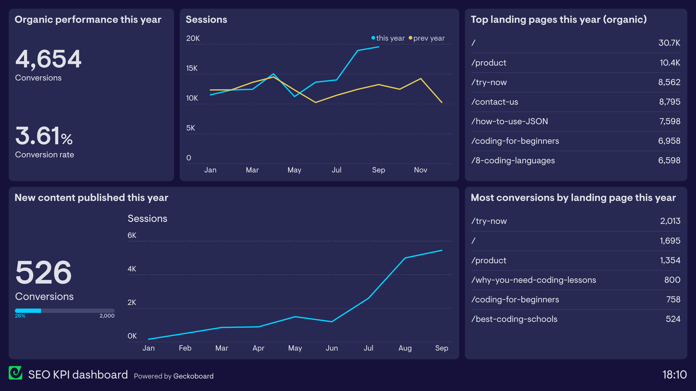

What Is SEO?
SEO stands for search engine optimization. It is the process of improving a website so search engines can better understand its content and show it to people searching for related information. SEO can affect how easily a webpage is discovered through search engines such as Google or Bing.
Search engines examine websites to determine what each page is about. They consider the written content, page structure, links, and technical performance of the site. A well-organized website makes it easier for search engines to connect its pages with useful search results.

Why Websites Use SEO
A website can contain useful information but still receive little attention when people cannot find it. SEO helps improve that visibility by making pages clearer and easier to discover. This can bring visitors to a website without requiring every visit to come from an advertisement or a direct link.
SEO also improves the experience of people already using the site. Clear headings, understandable navigation, useful content, and readable pages help visitors find what they need. Many SEO practices therefore benefit both search engines and regular users.
How Search Engines Find Content
Search engines use automated programs to discover pages and follow links across the web. After a page is discovered, information about it may be stored in a search engine index. The search engine can then compare that page with a person's search and decide whether it may be a useful result.
SEO does not guarantee that a page will appear first in search results. It gives the page a stronger chance of being understood and considered. Relevant content, a dependable website, and continued improvement are important parts of that process.
Main Areas of SEO
SEO is commonly divided into different areas. On-page SEO focuses on the content and elements found directly on a webpage. Technical SEO deals with how the website is built and performs. Other SEO work may involve building the website's reputation through links and mentions from outside sources.